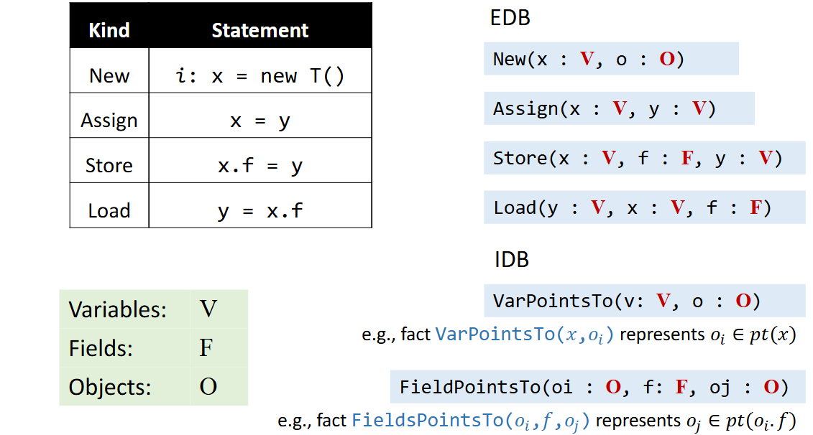
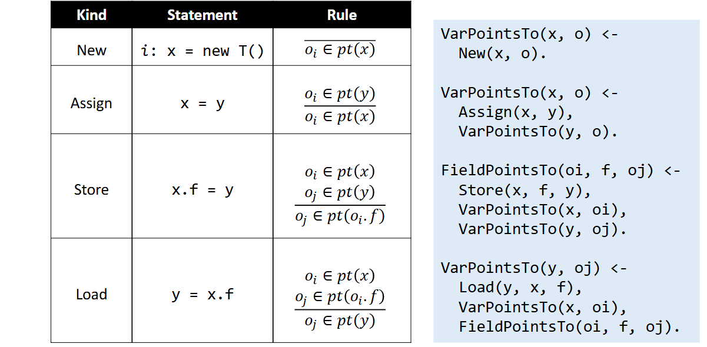
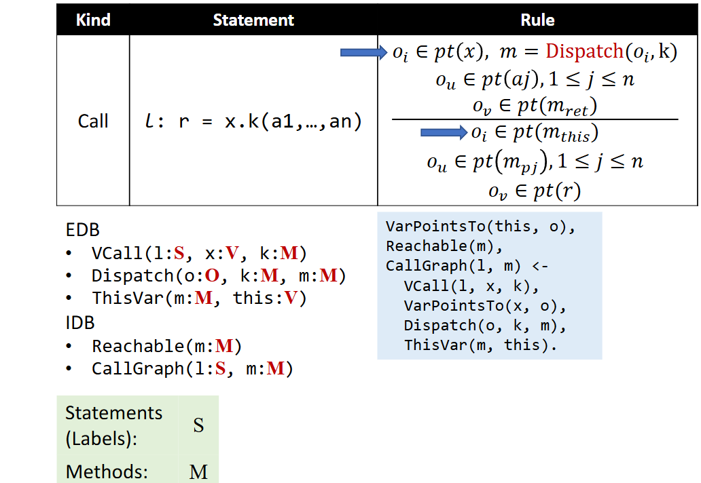
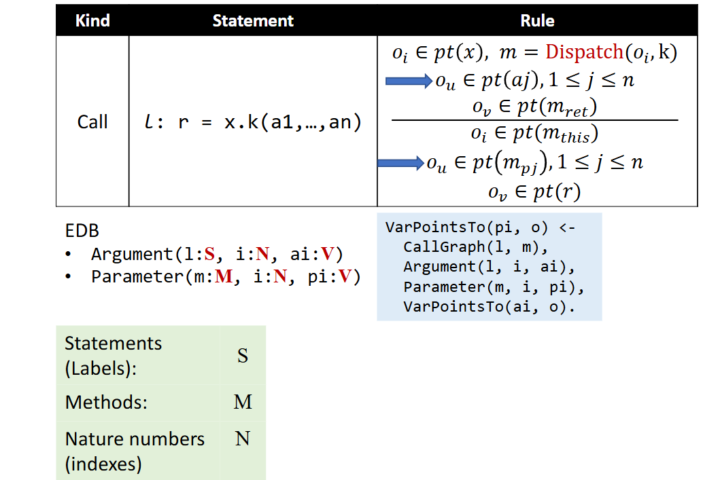
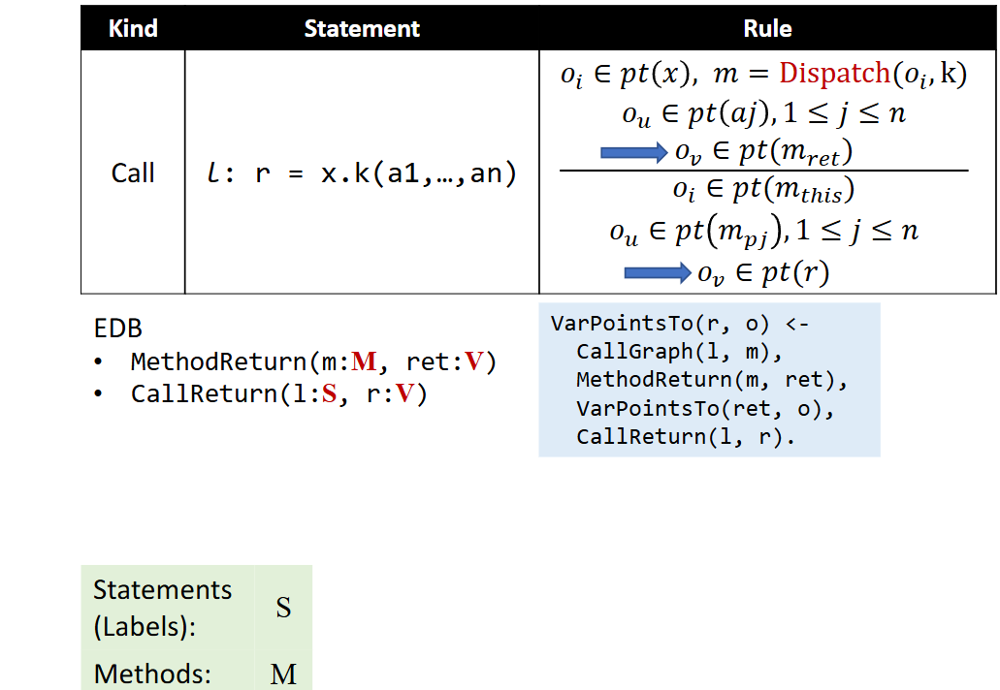
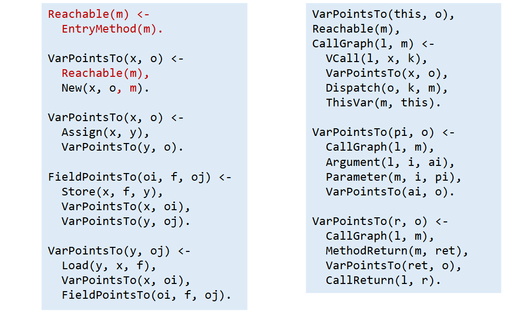
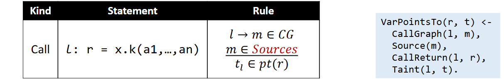

Motivation
对于同样的目标：从一组人当中选择出成人
-
Imperative（命令式语言）：如何做
SetselectAdults(Set persons) { Set result = new HashSet<>(); for (Person person : persons) if (person.getAge() >= 18) result.add(person); return result; } -
Declarative（声明式语言）：做什么
SELECT * FROM Persons WHERE Age >= 18;
可以看出来声明式语言要比命令式语言简单很多。
Introduction to Datalog
Datalog
- Datalog 是一种声明性逻辑编程语言，是 Prolog 的子集。
- 它作为一种数据库语言出现（1980 年代中期）
- 现在它有多种应用
- 程序分析
- 声明式网络
- 大数据
- 云计算
Datalog = Data + Logic（and, or, not）
- 无副作用
- 无控制流
- 无函数
- 非图灵完备
Predicates（谓词）
-
在 Datalog 中，谓词 （relation） 是一组语句
-
从本质上讲，谓词是一个数据表
如图所示，这里的 Age 就是一个谓词，即一个表，它表示某些人的年龄。
- (“Xiaoming”,18) 是指 “Xiaoming is 18”，这是一个 fact
- (“Abao”,23) 是指 “Abao is 23”，这不是一个 fact
Atoms（原子）
- 原子是 Datalog 的基本元素，它表示形如下图的谓词：
- Terms
- Variables（变量）：代表任何值
- Constants（常数）
- Examples
- Age(person,age)
- Age(“Xiaoming”,18)
- P(X1,X2,…,Xn) 被称为 relational atom
- 当谓词 P 包含 X1，X2,…,Xn 描述的元组时，P（X1，X2,…,Xn） 的计算结果为 true
- 除了 relational atoms 之外，Datalog 还有 arithmetic atoms
- E.g., age >= 18
Datalog Rules (Logic)
-
Rule 是一种表达逻辑推理的方式
-
Rule 还用于指定如何推断事实
-
Rule 的形式是：
规则的含义是“如果 body 为真，则 head 为 true”
例如，我们可以通过 Datalog 规则推断出 adults：
Adult(person) <- Age(person,age), age >= 18.
Interpretation of Datalog Rules
-
考虑子目标中变量值的所有可能组合
-
如果一个组合使所有子目标都为 true，则 head atom（具有相应的值）也为 true
-
head 谓词由所有真 atoms 组成
Rule Interpretation: An Example
也就是将所有使得 body 部分所有内容为真的数据加入到 head 中需要的数据。
EDB and IDB Predicates
知道了 rule 执行的流程，但是初始的数据从何而来呢？就要了解新的概念。
- EDB (extensional database)
- 提前定义的谓词
- 关系是不可变的
- 可以看作是输入关系
- IDB (intensional database)
- 仅由规则建立的谓词
- 关系由规则推断
- 可以看作是输出关系
例如：H <- B1,B2,…,Bn.
H 只能是 IDB，而Bi 可以是 EDB ，也可以是 IDB 。
Logical Or
在 Datalog 中有两种表示逻辑或
-
为同一个 head 编写多个规则
-
SportFan(person) <- Hobby(person, “jogging”). SportFan(person) <- Hobby(person,“swimming”).
-
-
使用逻辑 or 运算符 “;”
-
SportFan(person) <- Hobby(person,“jogging”); Hobby(person,“swimming”).
-
“;”（or） 小于 “，” （and），因此析取可以用括号括起来，e.g., H <- A,(B;C).
Negation（否定）
H(X1,X2) <- B1(X1,X3),!B2(X2,X4),…,Bn(Xm).-
在 Datalog 规则中，子目标可以是否定的原子，这会否定其含义。
-
否定的子目标写成 !B(…) 的形式。
-
例如，要计算需要参加补考的学生，我们可以编写：
MakeupExamStd(student) <- Student(student), !PassedStd(student).
其中 Student 存储所有学生，PassedStd 存储通过考试的学生。
Recursion（递归）
-
Datalog 支持递归规则，这允许可以从自身（直接/间接）推导出 IDB 谓词
-
例如，我们可以计算具有递归规则的图的可达性信息（即传递闭包）：
Reach(from, to) <- Edge(from, to). Reach(from, to) <- Reach(from, node), Edge(node, to).
其中 Edge（a，b） 表示图具有从节点 a 到节点 b 的边，Reach（a，b） 表示可以从 a 到达 b。
Rule Safety
我们先看如下几个规则
A(x) <- B(y), x > y.
A(x) <- B(y), !C(x,y).
A(x) <- B(x), !A(x).对于前两个规则，有无限的 x 的值都可以满足规则，这使得 A 成为一个无穷的关系。
而最后一个规则造成了矛盾，毫无意义。
- 如果每个变量都出现在至少一个非否定的关系原子中，则规则是安全的
- 在 Datalog 中，原子的递归和否定必须分开。否则，规则可能包含矛盾，推理无法收敛。
- 在 Datalog 中，只允许使用安全规则
Execution of Datalog Programs
- Datalog 引擎通过给定的规则和 EDB 谓词来推断事实，直到无法推断出新的事实。一些现代 Datalog 引擎：
- LogicBlox、Soufflé、XSB、Datomic、Flora-2 …
- 单调性：Datalog 是单调的，因为事实无法删除
- 终止：Datalog 程序总是终止，因为：
- Datalog 是单调的IDB
- 谓词的可能值是有限的（规则安全）
Pointer Analysis via Datalog
-
EDB：可以从程序语法中提取的指针相关信息
-
IDB：指针分析结果
-
规则：指针分析规则
Datalog Model for Pointer Analysis
Datalog Rules for Pointer Analysis
Handle Method Calls
这个部分通过几个部分来完成
首先完成 method 的 dispatch ，关于 dispatch ，这相当于在分析之前已经记录了所有对象的实际调用方法的数据信息，还包括了 callgraph 的构建和 this 变量指向的都对象的传递。
这部分是对参数信息的传递
这部分是对返回值信息的传递
指针分析全过程的 Datalog 语言，这里对于初始方法要加入 reachable，并且在对各种语句如 New 、Assign 等分析的时候，要判断该方法是否是可达的，否则不需浪费时间去做分析，但是实际只需要在分析 New 的 VarPointsTo 中加入该语句即可，因为后续都依赖于此。
Taint Analysis via Datalog
Datalog Model for Taint Analysis
首先是基于指针分析的
- EDB 谓词
- Source（m： M） // 源方法
- sink（m： M， i： N） // sink 方法
- Taint（l： S， t： T） // 将每个调用站点与来自该调用站点的受污染数据相关联
- IDB 谓词
- TaintFlow（sr： S， sn： S， i： N） // 检测到污点流，例如 TaintFlow(sr,sn,𝑖) 表示来自 source 调用 sr 的受污染数据可能会流向 sink 调用 sn 的第 i 个参数
处理 sources（生成受污染的数据）
处理 sink （生成污点流信息）

Conclusion
- Pros
- 简洁易读
- 易于实施
- 从现成的优化 Datalog 引擎中获益
- Cons
- 限制表达性，即无法或不方便表达某些逻辑
- 无法完全控制性能